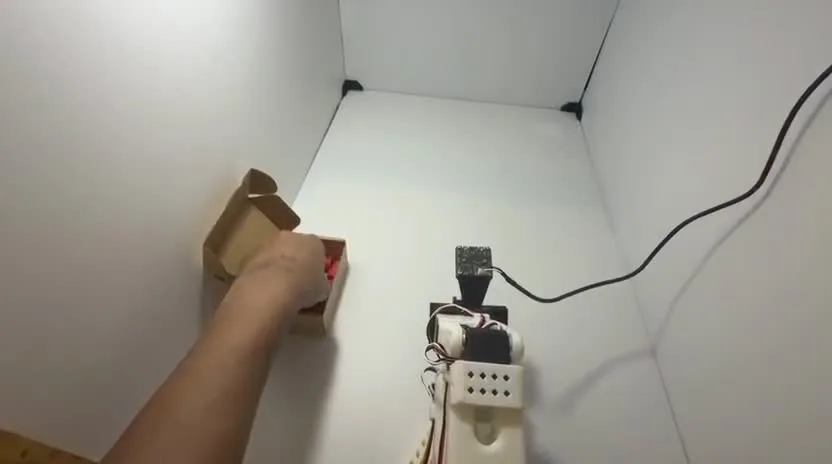
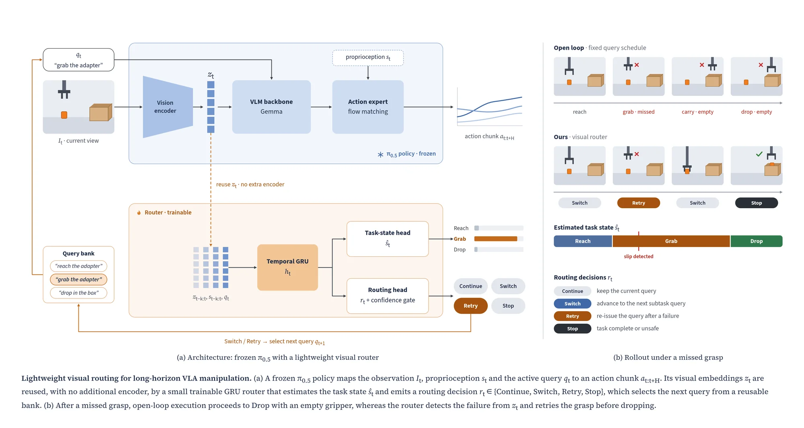
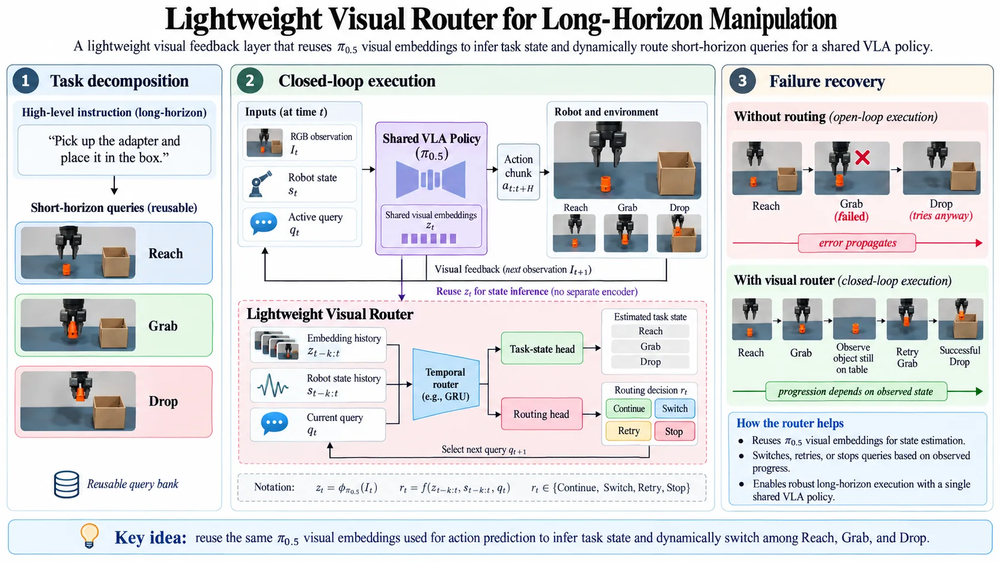
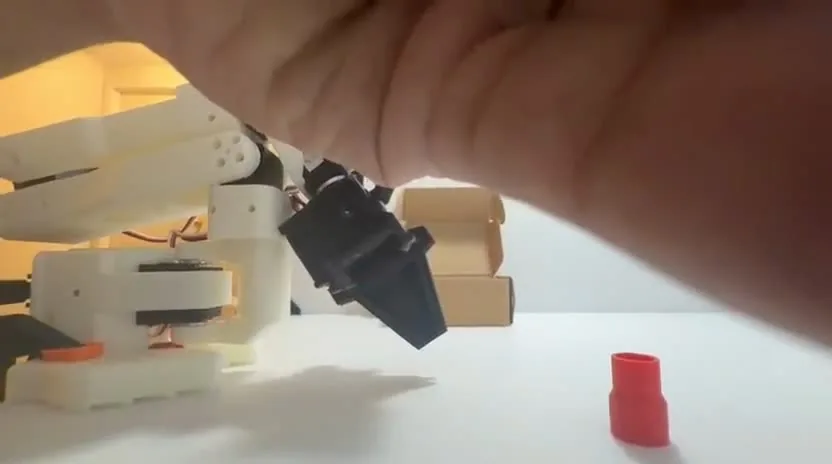

Vision-Language-Action models such as π0 / π0.5 can execute manipulation directly from natural-language instructions, but long-horizon commands introduce an additional challenge: the policy must not only generate the correct action, it must also understand which stage of the task it is currently executing.
“Pick up the adapter and place it in the box.”
This single instruction implicitly contains several states:
If the grasp fails but the policy continues to the transport stage, the remainder of the trajectory becomes meaningless.
The goal of this project is to introduce a lightweight supervisory mechanism that explicitly tracks task progress and determines what the VLA should be asked to do next.

Core idea
Reuse the π0.5 visual embeddings already computed for action prediction to infer task state, then switch among Reach, Grab and Drop.

Instead of training a separate policy for every subtask, I retain a single shared VLA policy and dynamically change its language conditioning.
A lightweight visual router determines when to:
vla.policy
Generates actions
The VLA remains responsible for generating robot actions.
router.select()
Chooses the instruction
The router decides which instruction the VLA should execute right now.
Demonstrations for query-adaptive fine-tuning are recorded on the 3D-printed arm, one short-horizon stage at a time.
Results
π0.5 baseline versus the same policy with the visual router, on Reach → Grab → Drop rollouts.
| metric | π0.5 baseline | + visual router | comparison |
|---|---|---|---|
| Task success rate↑ | 68% | 86% | |
| Failed-grasp recovery↑ | 22% | 81% | |
| State transition accuracy↑ | 74% | 93% | |
| Error propagation↓ lower is better | 31% | 9% |
## key contribution
A lightweight learned visual router that converts temporal execution feedback into dynamic query selection for a shared VLA policy, enabling explicit task-state tracking, adaptive progression, and recovery during long-horizon robotic manipulation.
Rollouts
Real-robot episodes on the Reach → Grab → Drop task.


- Task success rate ↑
- Percentage of full Reach → Grab → Drop episodes completed successfully.
successful episodes ÷ total episodes × 100 - Failed-grasp recovery rate ↑
- Percentage of failed grasp attempts where the system detects the failure, retries, and still completes the task.
recovered failed-grasp episodes ÷ total failed-grasp episodes × 100 - State transition accuracy ↑
- How often the router correctly identifies that the task has moved from one state to the next, e.g. Reach → Grab or Grab → Drop.
correct transition predictions ÷ total transition decisions × 100 - Error propagation rate ↓
- Percentage of intermediate failures that are not caught and cause the system to continue into the wrong next stage.
uncaught failures that propagate ÷ total intermediate failures × 100